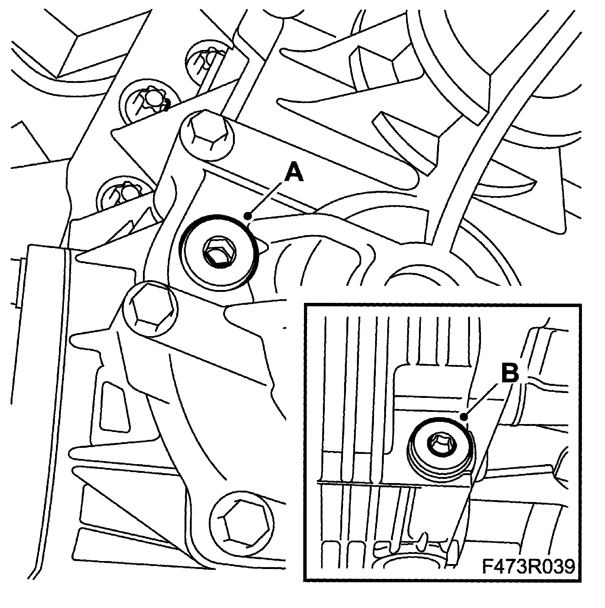
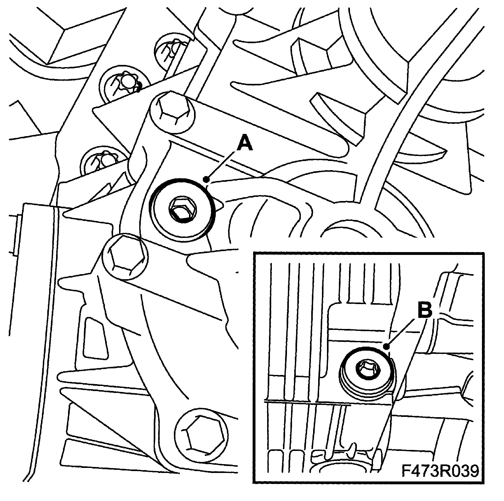
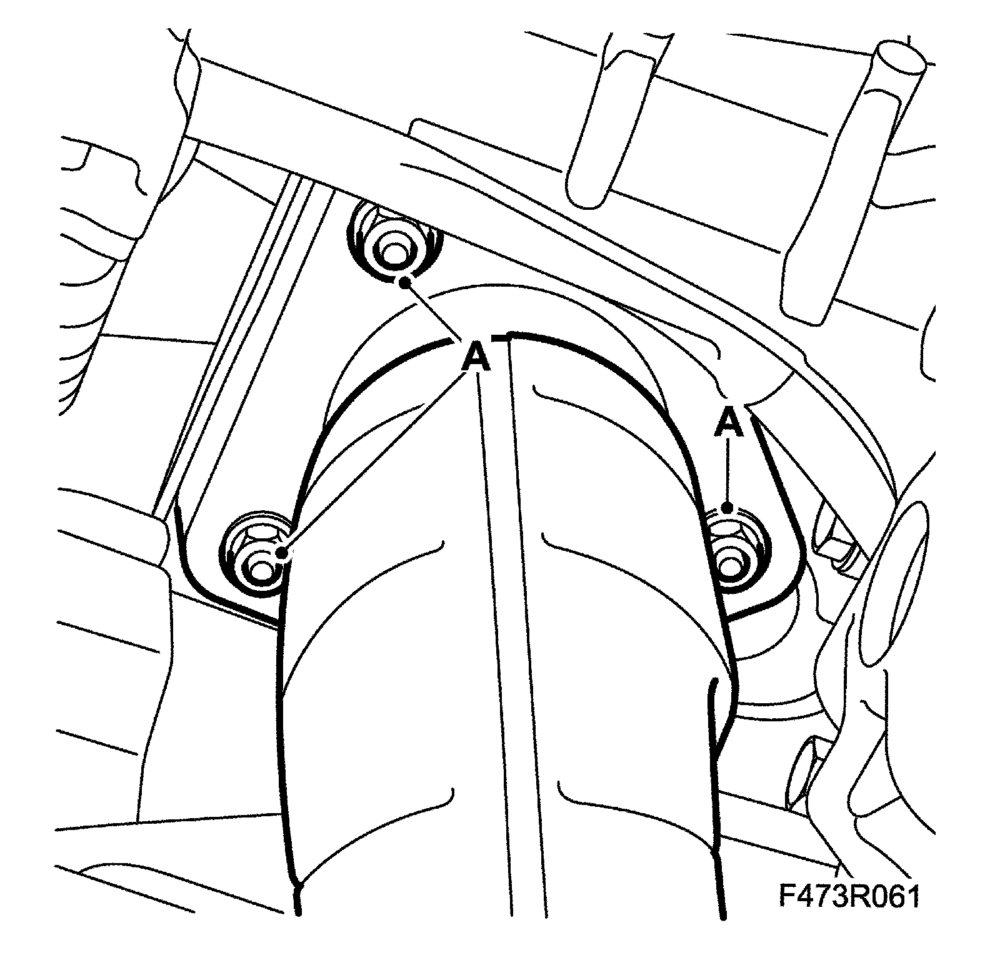

Fluid - Transfer Case: Service and Repair
Transfer case, changing the oil1. Raise the car.
2. Remove the front part of the rear catalytic converter (A). Suspend it and relieve the load with 83 95 212 Strap.
3. Remove the level plug (A).

4. Remove the drain plug (B), and drain the oil.
5. Fit the drain plug (B) with new seal.
Tightening torque 50 Nm (37 ft. lbs.)

6. Fill with oil through the level plug (A) until it starts to run out. Use a clean hose and funnel. The oil level should be at the lower edge of the hole.
7. Fit the level plug (A) with new seal.
Tightening torque 50 Nm (37 ft. lbs.)
8. Fit the front part of the rear catalytic converter. Remove the strap.
Tightening torque 30 Nm (22 ft. lbs.)

9. Lower the car to the floor.